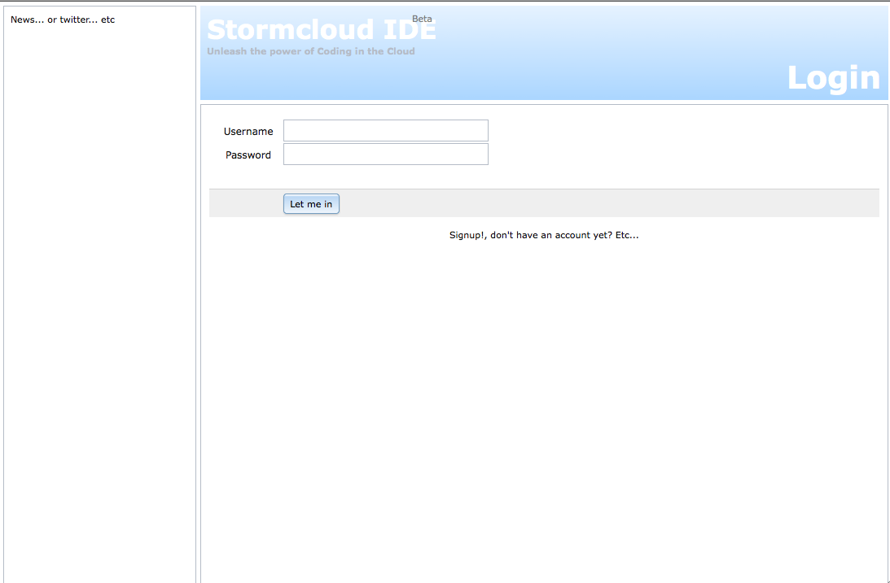

Coding in the Cloud
Developer setup manual
Introduction
This is an attempt to guide you (a developer) over the bumps of setting up your environment so you can run the Stormcloud IDE and join in the development. As it is a work in progress i ask you to bear with me and point out errors and/or shortcomings so at some point it will be an accurate and complete document.
First off start with forking the Project, GUI and API repositories and give them a star of course! ;)
Reported Supported
The following table shows on which OS the manual brought success. If you have any OS not listed here and were successful installing without diverging from the manual, let me know by posting it to the support mailing list, i will put it on the 'Reported Supported' list. If you got it done with some adjustments, let me know as well trough the same mailing list, i will adjust the manual with OS specific directions.
| Operating System | Distribution | Architecture |
|---|---|---|
| Linux | Ubuntu 12.04 Server | AMD 64-bit |
| Unix | OS X 10.6.8 (Snow Leopard) | AMD 64-bit |
Required Software
Following is a list of software you will need to install (or already have available) during the setup.
And of course your favorite IDE until Stormcloud IDE will be favorite ;)
Assumptions & Prerequisites
There are things that need to be done where you need to have Administrative privileges on the machine you are installing the IDE.
We assume you being a developer know your way around with the JDK, Git and Maven. These parts are not included in the manual so make sure you have java, git and maven commands available on the command line (This means not embedded in your IDE!).
Make sure these commands return something similar as below (it's not som much about the version as it is about having the binaries on your PATH):
Git
stormcloud:home martijn$ git --version
git version 1.7.3.4
Java
stormcloud:home martijn$ java -version
java version "1.6.0_39"
Java(TM) SE Runtime Environment (build 1.6.0_39-b04-442-10M4008)
Java HotSpot(TM) 64-Bit Server VM (build 20.14-b01-442, mixed mode)
Maven
stormcloud:home martijn$ mvn --version
Apache Maven 3.0.4 (r1232337; 2012-01-17 04:44:56-0400)
Maven home: /usr/share/maven
Java version: 1.6.0_39, vendor: Apple Inc.
Java home: /System/Library/Java/JavaVirtualMachines/1.6.0.jdk/Contents/Home
Default locale: en_US, platform encoding: MacRoman
OS name: "mac os x", version: "10.6.8", arch: "x86_64", family: "mac"
At a glance
Before we start there are a few conceptual things you need to understand. Just to know where what goes.
The Stormcloud IDE consists of three parts, these are GUI, API and User Home. In the image below the GUI domain has the blue-ish/purple overlay, the API is yellow and the User home is green.

In theory the GUI, API and User home can all three be placed on different machines but when you develop for it they will all three live on one and the same machine, the one you will develop on.
This does give some-things-todo with respect to tomcat port numbers that will bump into each other, keep that in mind, it's included in the manual to change the port numbers of the User Home Tomcat instance if you run everything on one machine.
Of course you can choose to place it over multiple machines but that will complicate things for development and should only be done for deployments aimed at using the IDE, not develop for it.
Short description
The GUI is a pure html/javascript project and the idea behind it is to keep it a pure javascript client which makes http requests to the Stormcloud Rest API on the server. The GUI components are all created with the Dojo toolkit, these are called widgets. The stormcloud part is 'bootstrapped' from the js/stormcloud/stormcloud.js and it has been setup following the AMD mechanism.
The API project is a maven project serving the Rest API. The glue is Spring and there are a few modules glued together: core (containing model pojo's, entites, dao and things like that), Debug, Filesystem, Git, Java, Maven, Tomcat and Web (the war file). Quite straight forward each module contains the specific parts to realize functionality basically matching the module name.
The User Home is a layout of folders on the filesystem containing all the 'private parts' (ehm, well, you know what i mean ;)) like project, private JVM/Tomcat instance and some 'internals' folders.
Set it all up.
Now. For the work that needs to be done. Take your time to do this, do not rush it as you will definitely end up chasing your tail (depending on your experience on the matter) making you pull your hair out and ending up in the corner of the room with a tinfoil cap on your head thinking you are a banana. Not good (for most of us).
Let's get to it then.
Building the Super POM
We will start with the Project repository. This repository contains the super pom, you will need to build this one first otherwise the API project will not build.
So Fork the stormcloud/project repository, clone the Fork
to your local machine and run mvn clean install on it.
(i'm always including 'clean',. that's just me, you don't have to do that). This should set you up with the project super
pom in your maven repository.
Setting up the GUI
Fork the stormcloud/gui repository and clone the Fork to your local machine.
Install Apache
The Stormcloud IDE GUI is served trough apache, so you need to have an apache installation and a site-enabled which serves the contents of the gui repository you just cloned. The project as cloned is ready to exactly be copy pasted into a website root. What i do is create a symlink from the dir where i cloned the repository to the dir apache knows has to serve. That way you can edit/view and commit directly without the hassle of moving things around, of course you can set it up anyway it works best for you.
Make sure you have proxy_http loaded as well. You can enable this by running the command (you need Administrative rights for this):
$ a2enmod proxy_http
Don't forget to restart apache!
At this point you should be able to see the GUI Login page as shown below when accessing http://localhost.

Not much to see yet so let's continue ...
The API (Rest Service)
Now for the next part. The Rest API is served from tomcat. (not the same one as the User Home is going to use!)
Install Tomcat
Make sure you have a correctly installed and working Tomcat (i use tomcat 7) which you can reach trough http://localhost:8080 where the Tomcat welcome page should show up.
You will have to copy a suitable MySQL driver (grab one here) into the [tomcat-home]/lib folder.
We use c3p0 for connection pooling. Grab yourself a copy here. Also place this jar in the tomcat lib folder and create a file called c3p0.properties, again in the [tomcat-home]/lib folder and add this in the file.
c3p0.preferredTestQuery = SELECT 1
c3p0.testConnectionOnCheckout = true
c3p0.acquireRetryDelay = 1
c3p0.acquireRetryAttempts = 1
When you made those changes you will have to restart Tomcat so the jars and properties file end up on the classpath.
Install MySQL
As you might have noticed by now, the API uses a MySQL database, so make sure you have mysql installed. Verify your installation by being able to login to the MySQL instance (either via command prompt or your favorite SQL tool).
Next you will have to create the stormcloud database by running the MySQL dump you will find in api/core/src/main/database/stormcloud.dump, run it on your MySQL instance to create the database and create a user which has write access to (or choose an existing one for that matter).
Properties file
The API contains some spring configuration which is using a properties file to find the connection specifications
for the MySQL database we just created in the previous section. You will find a properties file in
api/core/src/main/properties/stormcloud.properties.
Copy this file into the [tomcat-home]/lib/properties folder (create the properties dir). Make sure the url points to the correct host & database. Also change the username and password to read the user on your MySQL instance that can access the stormcloud database.
stormcloud.db.driver = com.mysql.jdbc.Driver
stormcloud.db.url = jdbc:mysql://localhost:3306/stormcloud
stormcloud.db.username = stormcloud
stormcloud.db.password = stormcloud
stormcloud.db.max.poolsize = 5
stormcloud.db.min.poolsize = 1
User Home (Filesystem)
We are now going to create the User Home.
Create the following folder structure in /home/stormcloud (create this folder)
.log
.m2
.trash
java
projects
tomcat
Also create the folder /var/log/stormcloud, this is where the API logging goes.
Make sure these folders are writable to the user which runs your Tomcat instance, place them in the same group or something like that. I just run tomcat as the same user as the folder owner, but that can be done much better from a linux admin perspective ;)
Also place a tomcat installation in the [user-home]/tomcat dir and create a symlink to it called 'latest'. This is for easy tomcat upgrading later on, or maybe even have a user choose which tomcat version he wants to run. Anyway, like this
drwxr-xr-x 13 martijn admin 442 21 dec 10:05 apache-tomcat-7.0.34
lrwxr-xr-x 1 martijn admin 20 21 dec 10:08 latest -> apache-tomcat-7.0.34
So you would end up with [user-home]/tomcat/latest being the tomcat home.
You will also need to change the port of this tomcat installation to be different from the tomcat you are already running behind port 8080. Change this in the [tomcat-home]/conf/server.xml
<Server port="8005" shutdown="SHUTDOWN">
into:
<Server port="8105" shutdown="SHUTDOWN">
and
<Connector port="8080" protocol="HTTP/1.1" connectionTimeout="20000" redirectPort="8443" />
into:
<Connector port="8180" protocol="HTTP/1.1" connectionTimeout="20000" redirectPort="8443" />
The java folder stays empty for now, i'm still working on a few issues before the private VM can be run, so all is going to run on one JVM for now.
The last bits
Deploy the API
Time to build and deploy the Stormcloud API war file. Fork and clone the stormcloud/api repository and run a mvn clean install on the api project
and you should end up with a stormcloud.war in the web/target dir. Deploy this into the Tomcat instance running behind port 8080.
Check if the deployment is without errors in the Stormcloud logfile in /var/log/stormcloud/server.log
Last line in there should be similar to this:
FrameworkServlet 'DispatcherServlet': initialization completed in 6436 ms
Deploy CometD
For now i have added the cometd-demo-2.5.0.war in api/core/src/main/cometd which you can directly deploy into tomcat. It's a demo war and basically a left over of the chat proof of concept i made so at some point there has to be an 'own' cometd implementation.
Apache Proxy Rules
We need to tie things together between Apache and Tomcat. In your apache configuration add these proxy rules:
ProxyRequests Off
ProxyPreserveHost On
<Proxy *>
Order allow,deny
Allow from all
</Proxy>
# Stormcloud Rest API
ProxyPass /stormcloud http://localhost:8080/stormcloud
ProxyPassReverse /stormcloud http://localhost:8080/stormcloud
# Stormcloud Chat (Comet)
ProxyPass /cometd http://localhost:8080/cometd-demo-2.5.0/cometd
ProxyPassReverse /cometd http://localhost:8080/cometd-demo-2.5.0/cometd
# Stormcloud private tomcat
ProxyPass /manager http://localhost:8180/manager
ProxyPassReverse /manager http://localhost:8180/manager
Restart Tomcat!
CORS Work-around
As i did not find a way to add cross-origin policy headers to the tomcat manager response and do not want to use the insecure JSONP, the IDE cannot make Ajax calls into the Tomcat manager app for administration tasks (stop/start, deploy/undeploy apps).
Therefore i added the last proxy rule in apache for you just added in the configuration, just to make it work.
It destroys the concept of running the GUI, API and User Home on different machines but Stormcloud IDE is still very much in development phase so no harm for now.
I'm examining if we can use this CORS filter (did not get it to work for the manager app), use a 'home grown' one or switch to JMX. For now the proxy rule will make it work in your development setup.
At this point you should be able to run the IDE and on a first startup it will show "No Projects Available" in the Project explorer. That means it's running as it should and it's time for you to create the first project.
Next best stop is here -> Create a new Project
Place any questions on the Mailing list!